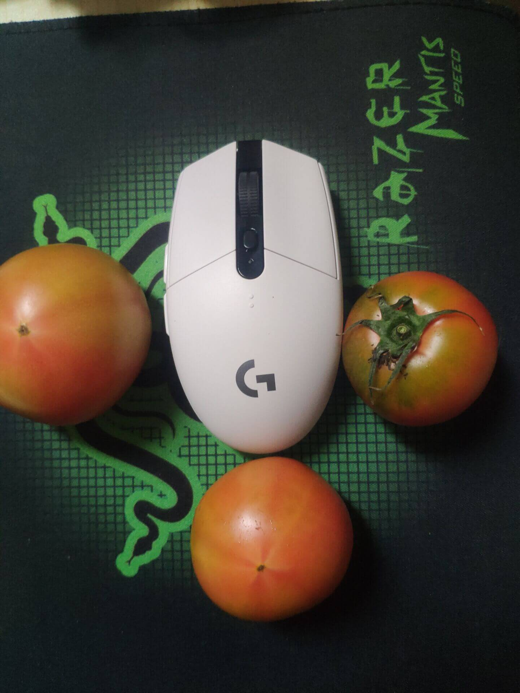
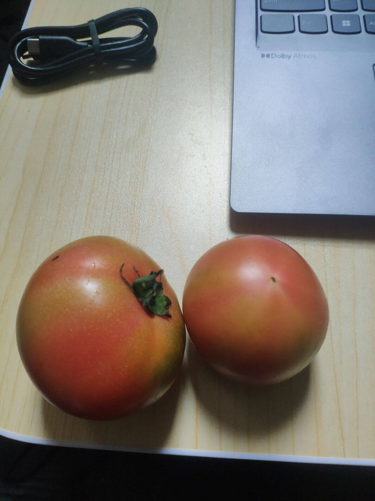
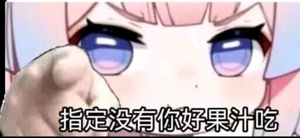

——长风几万里，吹度玉门关。
刚才偶然听到这个插曲，惊艳到我了。(当然以前应该也是听到过,但是没有注意)
前奏一响起来,思绪便滚滚而来.
我去查了下,我并没有实际意义上看过《喜剧之王》/《悠长假期》,所以抛开电影不谈。
我从小喜欢一种后启示录的意境。——可以简单理解为文明过后的景象。
比如上世纪7/80年代的建筑，破败的门窗，不流行的装修风格，被人遗弃的建筑
在郊区住的时候，我老是爱往山上跑，到处乱转，看着寂寥无人的山，只有脚下的小路以及被曾经被收割过的橡胶树，证明有人来过的痕迹。
在城里的时候，我老是往各种小巷子里边钻，因为主干道上都是华丽的装潢，小胡同里边缺失另一中时光停滞在上世纪的模样。
或许有生之年会去一趟玉门。
想起某部作品里边，玉门化名为雨门。
“春风不度玉门关”
玉门，曾经的中国石油第一城，因为石油而辉煌，也因为石油而重归尘土。
虽然能在网上找到的各种图片中，一窥当年的繁华，但是我觉得有机会的话，我会亲自走一趟。
在铁人王进喜、李四光的带领下，用自己的头脑和双手给藐视中国的外国专家一个有力的反击。“众人拾柴火焰高”，他们凭借坚韧不拔的毅力和辛勤的汗水在黄沙大漠上建立了一座光芒万丈的石油城。
建城初期，玉门油田承担了中国将近百分之九十的用油量，年均生产石油多达七十五万吨，占当时全国生产总量的百分之八十七，当之无愧中国石油第一城。
在这里引用一篇文章，可以看看文章里边是怎么写的。
在玉门老城区居住是怎样一番体验？ - 章愳的回答 - 知乎
前些天买了一箱名为铁皮番茄的番茄,价格挺美丽的,市面上的番茄大概是一块多一斤,这个是五斤五十块,折算一下,也大概需要七八块一斤.
到手赶紧拜托楼下老板帮忙炒了个蛋,真棒~满满的番茄汁,酸味十足.
老板表示这个番茄太面了,建议生吃,不然一炒就化了,变成汁了.
吃完番茄汁拌饭之后,我有吃了两个,果然,生吃起来是极好的,酸甜适中,入口即化,香气四溢.
步骤三:发图片向朋友炫耀.(顺手给他来一箱,他就喜欢这个.)
 我发信息给朋友炫耀了一通,难得酸一下他.
我:
这口感确实跟市场那种不一样
市场的需要咀嚼，需要忍受西红柿的皮
而这个(品种)，放入嘴里，舌头一压
汁液就流出来了朋友:
好了 过于详细了（我:
难得酸酸你
这不用力描述一下。友:
我:
好
打了个番茄味的嗝（
简直身心舒畅啊.
解包，血压从小头流向大头，一切都很美好，但是按照教程来就是不行。不管了，反正这个主题基本能用了，先这样吧。
还有关于可以优化一下。